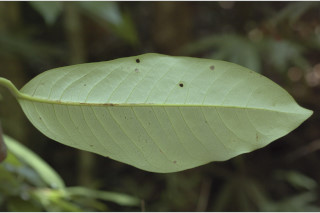
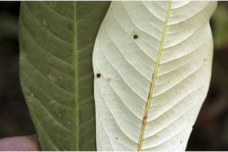
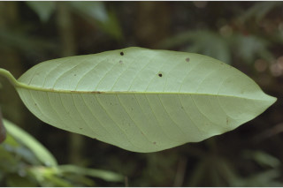
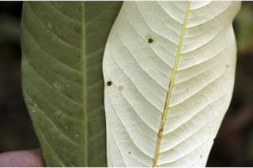
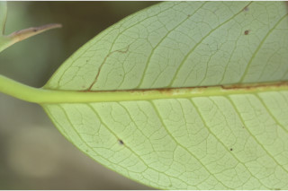
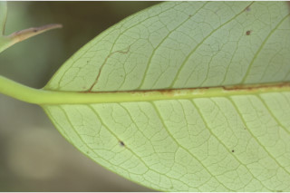
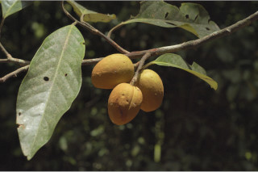
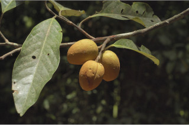

Botanical descriptions
ಸಸ್ಯದ ವೈಜ್ಞಾನಿಕ ವಿವರ
Botanical descriptions
மரங்களின் பண்புகள்
Habit
ಪ್ರಕೃತಿ
Habit
வளரியல்பு
Trees up to 20 m tall, often with stilt roots.
ಹಲವು ಸಂಧರ್ಭಗಳಲ್ಲಿ ದಂಟು ಬೇರುಗಳನ್ನೊಳಗೊಂಡ,20 ಮೀ. ವರೆಗಿನ ಎತ್ತರದ ಮರಗಳು.
Trees up to 20 m tall, often with stilt roots.
மரங்கள் 20 மீ. உயரம் வரை வளரக்கூடியது, ஸ்டில்ட் வேர்களுடையவை.
Trunk & Bark
ಕಾಂಡ ಮತ್ತು ತೊಗಟೆ
Trunk & Bark
தண்டு மற்றும் மரப்பட்டை
Bark brownish, lenticellate, flaky; blaze reddish.
ತೊಗಟೆ ಕಂದು ಛಾಯೆ ಹೊಂದಿದ್ದು ಸೂಕ್ಷ್ಮ ವಾಯು ವಿನಿಮಯ ಬೆಂಡು ರಂಧ್ರಗಳ ಸಮೇತವಿರುತ್ತದೆ ಹಾಗೂ ಚಕ್ಕೆಯೇಳುವ ಮಾದರಿಯಲ್ಲಿರುತ್ತದೆ;ಕಚ್ಚು ಮಾಡಿದ ಜಾಗ ಕೆಂಪು ಛಾಯೆಯನ್ನು ಹೊಂದಿರುತ್ತದೆ.
Bark brownish, lenticellate, flaky; blaze reddish.
மரத்தின் பட்டை ப்ரவுன் நிறமானது, பட்டைத்துளைகள் (லெண்டிசெல்லேட்) உடையது, செதில்களாக உதிருபவை; உள்பட்டை சிவப்பு நிறமானது.
Branches and branchlets
ಕವಲುಗಳು ಮತ್ತು ಕಿರುಕೊಂಬೆಗಳು
Branches and branchlets
கிளைகள் & சிறிய நுனிக்கிளைகள்
Branches verticillate, usually right angles to the main trunk; branchlets terete, glabrous.
ಕವಲುಗಳುಗಳು ಸುತ್ತು ಜೋಡನೆಯಲ್ಲಿದ್ದು ಮುಖ್ಯ ಕಾಂಡದ ಲಂಬ ರೇಖೆಗೆ ಸಮಕೋನದಲ್ಲಿರುತ್ತವೆ; ಕಿರುಕೊಂಬೆಗಳು ದುಂಡಾಗಿದ್ದು ರೋಮರಹಿತವಾಗಿರುತ್ತವೆ.
Branches verticillate, usually right angles to the main trunk; branchlets terete, glabrous.
கிளைகள் வர்டிசில்லேட், பொரும்பாலும் நிலத்திற்கு கிடைமட்டமானது; சிறியநுனிக்கிளைகள் குறுக்குவெட்டுத் தோற்றத்தில் வளையமானது, உரோமங்களற்றது.
Exudates
ಜಿನುಗು ದ್ರವ
Exudates
சாறு
Sap red from cut end of bark, profuse.
ತೊಗಟೆಯನ್ನು ಕೆತ್ತಿದಾಗ ಕೆಂಪು ಬಣ್ಣದ ವಿಫುಲವಾದ ಸಸ್ಯ ರಸವಿರುತ್ತದೆ.
Sap red from cut end of bark, profuse.
மரத்தின் பட்டை வெட்டப்படும் போது சிவப்பு நிற பால் அதிகளவு சுரக்கிறது.
Leaves
ಎಲೆಗಳು
Leaves
இலைகள்
Leaves simple, alternate, distichous; petiole 1.5-4 cm, canaliculate, glabrous; lamina 12-25 x 4-12 cm, variable from narrow oblong to oblong, elliptic to lanceolate, apex acute with blunt tip or obtuse, base acute to rounded, margin entire, thickly coriaceous, shining above, white glaucous beneath; midrib raised above; secondary_nerves 10-18 pairs, impressed above; tertiary_nerves obscure or broadly reticulo-percurrent when visible.
ಎಲೆಗಳು ಸರಳವಾಗಿದ್ದು ಪರ್ಯಾಯ ಮತ್ತು ಸುತ್ತು ಜೋಡನಾ ವ್ಯವಸ್ಥೆಯಲ್ಲಿದ್ದು ಕಾಂಡದ ಎರಡೂ ಕಡೆ ಎದುರು ಬದರಿನ ಲಂಬ ಸಾಲಿನಲ್ಲಿರುತ್ತವೆ ; ತೊಟ್ಟುಗಳು 1.5 ರಿಂದ 4 ಸೆಂ.ಮೀ. ಉದ್ದ ಹೊಂದಿದ್ದು ಕಾಲುವೆಗೆರೆ ಸಮೇತವಾಗಿರುತ್ತವೆ ಮತ್ತು ರೋಮರಹಿತವಾಗಿರುತ್ತವೆ;ಪತ್ರಗಳು 12 - 25 X 4 - 12 ಸೆಂ.ಮೀ.ವರೆಗಿನ ಗಾತ್ರವಿದ್ದು ಸಂಕುಚಿತ ಚತುರಸ್ರದಿಂದ ಚತುರಸ್ರ , ಸಂಕುಚಿತ ಅಂಡವೃತ್ತದಿಂದ ಭರ್ಜಿಯವರೆಗಿನ ಆಕಾರಗಳ ವೈವಿಧ್ಯತೆ ಹೊಂದಿದ್ದು, ಮೊಂಡಾಗ್ರವುಳ್ಳ ಚೂಪಾದ ಅಥವಾ ಚೂಪಲ್ಲದ ತುದಿ, ಚೂಪಾದ ಅಥವಾ ದುಂಡಾದ ಬುಡ,ನಯವಾದ ಅಂಚು, ದಪ್ಪವಾಗಿರುವ ತೊಗಲನ್ನೋಲುವ ಮಾದರಿಯ ಮೇಲ್ಮೈ ಹೊಂದಿರುತ್ತವೆ,ಪತ್ರಗಳು ಮೇಲ್ಭಾಗದಲ್ಲಿ ಹೊಳಪಿನಿಂದ ಕೂಡಿದ್ದು ತಳಭಾಗ ಬಿಳಿಯದಾದ ಮಾಸಲು ಬೂದು ಹಸಿರು ಬಣ್ಣದಲ್ಲಿರುತ್ತವೆ ;ಮಧ್ಯ ನಾಳ ಮೇಲ್ಭಾಗದಲ್ಲಿ ಮೇಲೆದ್ದಿರುತ್ತದೆ; ಎರಡನೇ ದರ್ಜೆಯ ನಾಳಗಳು 10 - 18 ಜೋಡಿಗಳಿದ್ದು ಪತ್ರಗಳ ಮೇಲ್ಭಾಗದಲ್ಲಿ ಮುದ್ರೆ ಒತ್ತಿದಂತಿರುತ್ತವೆ;ಮೂರನೇ ದರ್ಜೆಯ ನಾಳಗಳು ಅಸ್ಪಷ್ಟವಾಗಿರುತ್ತವೆ, ಸ್ಪಷ್ಟವಾಗಿ ಕಂಡಲ್ಲಿ ವಿಶಾಲ ಜಾಲಬಂಧ ನಾಳ ವಿನ್ಯಾಸದಲ್ಲಿದ್ದು ಎಲೆದಿಂಡಿಗೆ ಅಡ್ಡವಾಗಿ ಕೂಡುತ್ತವೆ.
Leaves simple, alternate, distichous; petiole 1.5-4 cm, canaliculate, glabrous; lamina 12-25 x 4-12 cm, variable from narrow oblong to oblong, elliptic to lanceolate, apex acute with blunt tip or obtuse, base acute to rounded, margin entire, thickly coriaceous, shining above, white glaucous beneath; midrib raised above; secondary_nerves 10-18 pairs, impressed above; tertiary_nerves obscure or broadly reticulo-percurrent when visible.
இலைகள் தனித்தவை, மாற்றுஅடுக்கமானவை, இருநெடுக்கு வரிசையிலையடுக்கம் (டைஸ்டிக்கஸ்); இலைக்காம்பு 1.5-4 செ.மீ., குறுக்குவெட்டுத் தோற்றத்தில் கேனாலிகுலேட், உரோமங்களற்றது; இலை அலகு 12-25 x 4-12 செ.மீ., வடிவம் வேறுபாடானது, குறுகிய நீள்சதுர வடிவானது முதல் நீள்சதுர வடிவானது, நீள்வட்ட வடிவானது முதல் ஈட்டி வடிவானது, அலகின் நுனி கூரியது அதன் முனை மழுங்கியது அல்லது மெட்டையானது, அலகின் தளம் கூரியது முதல் வட்டமானது, அலகின் விளிம்பு முழுமையானது, தடித்த கோரியேசியஸ், அலகின் மேற்பரப்பு பளபளப்பானது, அலகின் கீழ்பரப்பு மெழுகுபூசியது (க்களாக்கஸ்) போன்று வெள்ளை நிறமானது; மையநரம்பு மேற்புறத்தில் அலகின் பரப்பைவிட உயர்ந்து இருக்கும்; இரண்டாம் நிலை நரம்புகள் 10-18 ஜோடிகள், அலகின் பரப்பைவிட பள்ளமானது; மூன்றாம் நிலை நரம்புகள் கண்களுக்கு புலப்படாது அல்லது அகன்ற வலைப்பின்னல்-பெர்க்கரண்ட் அமைப்பு கொண்டது.
Inflorescence / Flower
ಪುಷ್ಪಮಂಜರಿ / ಹೂಗಳು
Inflorescence / Flower
மஞ்சரி / மலர்கள்
Flowers unisexual, dioecious, white; male flowers in axillary short umbels, 10-20 flowered; female flowers in fascicles, sessile.
ಹೂಗಳು ಏಕ ಲಿಂಗಿಗಳಾಗಿದ್ದು ಗಂಡು ಮತ್ತು ಹೆಣ್ಣು ಹೂಗಳು ಪ್ರತ್ಯೇಕ ಸಸ್ಯಗಳಲ್ಲಿರುತ್ತವೆ ಮತ್ತು ಬಿಳಿ ಬಣ್ಣ ಹೊಂದಿರುತ್ತವೆ;ಗಂಡು ಹೂಗಳು ಅಕ್ಷಾಕಂಕುಳಿನಲ್ಲಿರುವ,10 ರಿಂದ 20 ಹೂಗಳನ್ನೊಳಗೊಂಡ ಪೀಠಛತ್ರ ಪುಷ್ಪ ಮಂಜರಿಯಲ್ಲಿರುತ್ತವೆ;ಹೆಣ್ಣು ಹೂಗಳು ತೊಟ್ಟುರಹಿತವಾಗಿದ್ದು ಗುಚ್ಛಗಳಲ್ಲಿರುತ್ತವೆ.
Flowers unisexual, dioecious, white; male flowers in axillary short umbels, 10-20 flowered; female flowers in fascicles, sessile.
மலர்கள் ஓர் பாலானவை, ஈரகம் கொண்டவை, வெள்ளை நிறமானது; ஆண் மலர்கள் இலைக்கோணங்களில் காணப்படுபவை குட்டையான அம்பல் வகை மஞ்சரி, 10-20 மலர்களுடையது; பெண் மலர்கள் தொகுப்பாக அமைந்தவை, காம்பற்றது.
Fruit and Seed
ಕಾಯಿ / ಬೀಜ
Fruit and Seed
கனி / விதை
Capsule, ovoid, 6 x 3 cm, densely tomentose; seed one, ovoid, covered with orange red deeply laciniate aril.
ಸಂಪುಟ ಫಲ ಅಂಡಾಕೃತಿಯಲ್ಲಿದ್ದು 6 X 4 ಸೆಂ.ಮೀವರೆಗಿನ ಗಾತ್ರ ಹೊಂದಿದ್ದು, ದಟ್ಟ ಮೃದುಗೂದಲುಗಳಿಂದ ಕೂಡಿರುತ್ತವೆ; ಬೀಜಗಳು ಒಂದಿದ್ದು ಅಂಡಾಕಾರದಲ್ಲಿದ್ದು ಕಡುಗೆಂಪು ಬಣ್ಣದ ಆಳವಾದ ಸೀಳಿಕೆಗಳನ್ನುಳ್ಳ ಪತ್ರೆಯಿಂದ ಆವೃತವಾಗಿರುತ್ತವೆ.
Capsule, ovoid, 6 x 3 cm, densely tomentose; seed one, ovoid, covered with orange red deeply laciniate aril.
வெடிகனி (கேப்சியூல்), முட்டை வடிவானது, 6 X 3 செ.மீ., அடர்த்தியாக உரோமங்களுடையது; ஒரு விதையுள்ள கனி, முட்டை வடிவானது, ஆரஞ்ச் சிவப்பு நிறமான விளிம்களில் பிளவுடைய பத்ரி (ஏரில்) உடையது.


 



 

 
